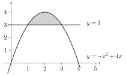
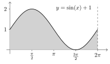
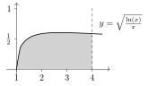
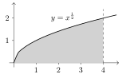
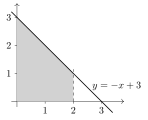
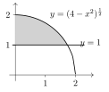
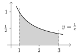

Find the area of each shaded region.


Find the volume of the solid obtained by rotating each shaded region about the $x$-axis.


Find the volume of the solid obtained by rotating each shaded region about the $y$-axis.



Set up an integral (but do not evaluate) that represents the surface area of the curve rotated about the given axis.
Set up an integral (but do not evaluate) for the length of the curve on the given interval.